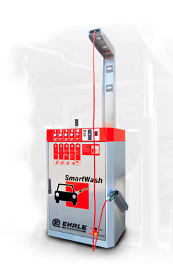
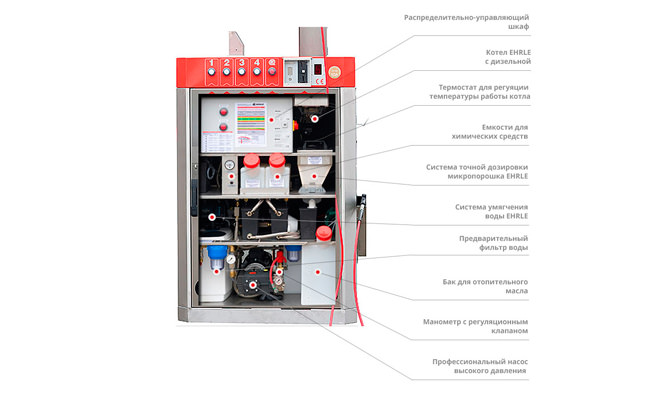

1-постовые мойки SmartWash и SmartWash Plus предназначены для небольших объектов, или там, где инвестиции ограничены. Однако небольшое оборудование не означает небольшую прибыль. Оно является отличным дополнением к бизнесу типа АЗС, станция техосмотра автомобилей, автосервисный центр.
SmartWash это экономный, простой в обслуживании, и компактный вариант 1-постовой автомойки самообслуживания EHRLE. Оборудование позволяет безопасно и современно помыть автомобиль. При бесконтактной технологии, используя Микропорошок PPMP PowerPearl MicroPowder и теплую умягченную воду, грязь удаляется быстрее и эффективнее.SmartWash выпускается в стандартной версии, укомплектованной системой умягчения воды, и в версии PLUS – с дополнительной системой обратного осмоса. Вода на 1-постовой мойке подогревается с помощью дизельного либо электрического котла.


| Данные |
SmartWash |
| количество постов |
1 |
| количество систем дозации на одном посте |
1 |
| программа лояльности |
KeySystem |
| платеж |
монеты, жетоны, ключ KeySystem, банкноты |
| количество программ мытья |
4 |
| монтаж дополнительной моющей щетки |
+ |
| программа «Активная пена EHRLE» |
— |
| система контроля |
+ (on side) |
| отображение сервисной информации |
+ |
| изготовлено в |
Германия |
| сертификат |
CE, VDA |
| управление |
компьютер SIEMENS, PC |
| внешний размер оборудования (выс. х шир. х гл.) |
175 (325) x 120 x 82 см |
| расход воды на 1 пост |
400 — 660 л/ч |
| максимальное давление |
135 бар |
| рабочее давление |
30 — 120 бар (регулируемое поплавком) |
| обороты насоса высокого давления |
900 об/мин. |
| способ подогрева воды |
дизельный/электрический |
| мощность грелки |
35 кВт (дизель.), 6/12 кВт (электр.) |
| емкость котла |
10 л (дизель.), 50 л (электр.) |
| бак WAB |
40 л |
| система умягчения воды |
1x32 cbm/⁰dH |
| система обратного осмоза |
— |
| бак для деминерализованной воды |
— |
| вес |
ок. 450 кг |
| емкость бака для дизельного топлива |
20 кг |
| бак для соли в таблетках |
20 л |